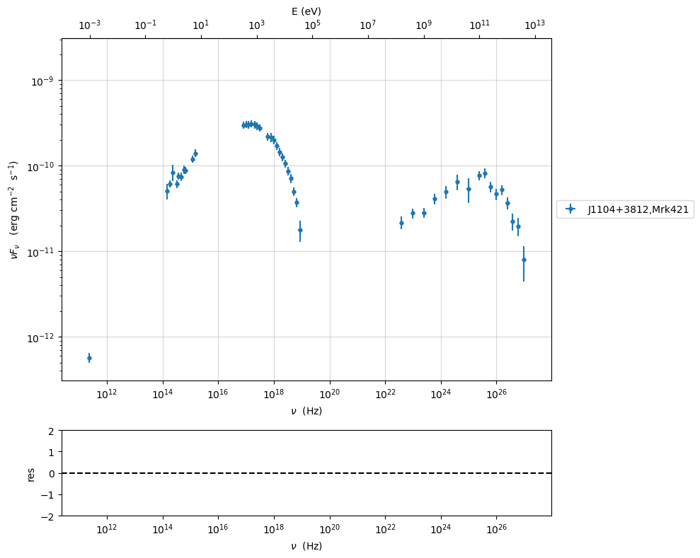

Model fitting with gammapy
%matplotlib inline
data=Data.from_file(test_SEDs[1])
sed_data=ObsData(data_table=data)
sed_data.group_data(bin_width=0.1)
sed_data.add_systematics(0.1,[10.**6,10.**29])
p=sed_data.plot_sed()
================================================================================
* binning data *
---> N bins= 179
---> bin_widht= 0.1
================================================================================
/Users/orion/anaconda3/envs/gammapy/lib/python3.9/site-packages/astropy/table/table.py:1407: FutureWarning: Using a non-tuple sequence for multidimensional indexing is deprecated; use arr[tuple(seq)] instead of arr[seq]. In the future this will be interpreted as an array index, arr[np.array(seq)], which will result either in an error or a different result.
newcol = col[slice_]

from jetset.sed_shaper import SEDShape
my_shape=SEDShape(sed_data)
my_shape.eval_indices(minimizer='lsb',silent=True)
p=my_shape.plot_indices()
p.setlim(y_min=1E-15,y_max=1E-6)
================================================================================
* evaluating spectral indices for data *
================================================================================

mm,best_fit=my_shape.sync_fit(check_host_gal_template=False,
Ep_start=None,
minimizer='lsb',
silent=True,
fit_range=[10.,21.])
================================================================================
* Log-Polynomial fitting of the synchrotron component *
---> first blind fit run, fit range: [10.0, 21.0]
---> class: HSP
Table length=4
| model name | name | val | bestfit val | err + | err - | start val | fit range min | fit range max | frozen |
|---|
| LogCubic | b | -1.624004e-01 | -1.624004e-01 | 6.476287e-03 | -- | -1.000000e+00 | -1.000000e+01 | 0.000000e+00 | False |
| LogCubic | c | -1.152224e-02 | -1.152224e-02 | 9.546081e-04 | -- | -1.000000e+00 | -1.000000e+01 | 1.000000e+01 | False |
| LogCubic | Ep | 1.673089e+01 | 1.673089e+01 | 2.573962e-02 | -- | 1.668212e+01 | 0.000000e+00 | 3.000000e+01 | False |
| LogCubic | Sp | -9.484256e+00 | -9.484256e+00 | 1.783365e-02 | -- | -1.000000e+01 | -3.000000e+01 | 0.000000e+00 | False |
---> sync nu_p=+1.673089e+01 (err=+2.573962e-02) nuFnu_p=-9.484256e+00 (err=+1.783365e-02) curv.=-1.624004e-01 (err=+6.476287e-03)
================================================================================
my_shape.IC_fit(fit_range=[23.,29.],minimizer='minuit',silent=True)
p=my_shape.plot_shape_fit()
p.setlim(y_min=1E-15)
================================================================================
* Log-Polynomial fitting of the IC component *
---> fit range: [23.0, 29.0]
---> LogCubic fit
Table length=4
| model name | name | val | bestfit val | err + | err - | start val | fit range min | fit range max | frozen |
|---|
| LogCubic | b | -2.104700e-01 | -2.104700e-01 | 3.125009e-02 | -- | -1.000000e+00 | -1.000000e+01 | 0.000000e+00 | False |
| LogCubic | c | -4.685169e-02 | -4.685169e-02 | 2.175617e-02 | -- | -1.000000e+00 | -1.000000e+01 | 1.000000e+01 | False |
| LogCubic | Ep | 2.525001e+01 | 2.525001e+01 | 1.144759e-01 | -- | 2.529805e+01 | 0.000000e+00 | 3.000000e+01 | False |
| LogCubic | Sp | -1.010998e+01 | -1.010998e+01 | 3.513736e-02 | -- | -1.000000e+01 | -3.000000e+01 | 0.000000e+00 | False |
---> IC nu_p=+2.525001e+01 (err=+1.144759e-01) nuFnu_p=-1.010998e+01 (err=+3.513736e-02) curv.=-2.104700e-01 (err=+3.125009e-02)
================================================================================

from jetset.obs_constrain import ObsConstrain
from jetset.model_manager import FitModel
sed_obspar=ObsConstrain(beaming=25,
B_range=[0.001,0.1],
distr_e='lppl',
t_var_sec=3*86400,
nu_cut_IR=1E12,
SEDShape=my_shape)
prefit_jet=sed_obspar.constrain_SSC_model(electron_distribution_log_values=False,silent=True)
prefit_jet.save_model('prefit_jet.pkl')
================================================================================
* constrains parameters from observable *
/Users/orion/anaconda3/envs/gammapy/lib/python3.9/site-packages/jetset/obs_constrain.py:650: RankWarning: Polyfit may be poorly conditioned
return func(*args, **kwargs),completed
| model name | name | par type | units | val | phys. bound. min | phys. bound. max | log | frozen |
|---|
| jet_leptonic | R | region_size | cm | 3.105858e+16 | 1.000000e+03 | 1.000000e+30 | False | False |
| jet_leptonic | R_H | region_position | cm | 1.000000e+17 | 0.000000e+00 | -- | False | True |
| jet_leptonic | B | magnetic_field | gauss | 5.050000e-02 | 0.000000e+00 | -- | False | False |
| jet_leptonic | beam_obj | beaming | lorentz-factor* | 2.500000e+01 | 1.000000e-04 | -- | False | False |
| jet_leptonic | z_cosm | redshift | | 3.080000e-02 | 0.000000e+00 | -- | False | False |
| jet_leptonic | gmin | low-energy-cut-off | lorentz-factor* | 4.697542e+02 | 1.000000e+00 | 1.000000e+09 | False | False |
| jet_leptonic | gmax | high-energy-cut-off | lorentz-factor* | 1.373160e+06 | 1.000000e+00 | 1.000000e+15 | False | False |
| jet_leptonic | N | emitters_density | 1 / cm3 | 8.476131e-01 | 0.000000e+00 | -- | False | False |
| jet_leptonic | gamma0_log_parab | turn-over-energy | lorentz-factor* | 3.327955e+04 | 1.000000e+00 | 1.000000e+09 | False | False |
| jet_leptonic | s | LE_spectral_slope | | 2.163414e+00 | -1.000000e+01 | 1.000000e+01 | False | False |
| jet_leptonic | r | spectral_curvature | | 8.120021e-01 | -1.500000e+01 | 1.500000e+01 | False | False |
================================================================================
pl=prefit_jet.plot_model(sed_data=sed_data)
pl.add_model_residual_plot(prefit_jet,sed_data)
pl.setlim(y_min=1E-15,x_min=1E7,x_max=1E29)

setting gammapy jetset model
we import the model to gammapy and we set min/max values. Notice that
gammapy has not fit_range, but uses only min/max
jet=Jet.load_model('prefit_jet.pkl')
jet.parameters.z_cosm.freeze()
jet.parameters.gmin.freeze()
jet.parameters.R.freeze()
jet.parameters.gmax.set(val_min=1E5, val_max=1E7)
jet.parameters.N.set(val_min=0.001, val_max=3)
jet.parameters.R.set(val_min=1E15,val_max=1E17)
jet.parameters.B.set(val_min=0.0001,val_max=1)
jet.parameters.beam_obj.set(val_min=5,val_max=30)
jet.parameters.gamma0_log_parab.set(val_min=1E3,val_max=1E5)
jet.parameters.s.set(val_min=1,val_max=3)
jet.parameters.r.set(val_min=0.1,val_max=2)
jet.parameters.R_H.set(val_min=1E17,val_max=1E19)
jet.parameters.z_cosm.set(val_min=0.0,val_max=1)
gammapy_jet_model=GammapyJetsetModelFactory(jet)
SPECTRAL_MODEL_REGISTRY.append(gammapy_jet_model)
| model name | name | par type | units | val | phys. bound. min | phys. bound. max | log | frozen |
|---|
| jet_leptonic | gmin | low-energy-cut-off | lorentz-factor* | 4.697542e+02 | 1.000000e+00 | 1.000000e+09 | False | False |
| jet_leptonic | gmax | high-energy-cut-off | lorentz-factor* | 1.373160e+06 | 1.000000e+00 | 1.000000e+15 | False | False |
| jet_leptonic | N | emitters_density | 1 / cm3 | 8.476131e-01 | 0.000000e+00 | -- | False | False |
| jet_leptonic | gamma0_log_parab | turn-over-energy | lorentz-factor* | 3.327955e+04 | 1.000000e+00 | 1.000000e+09 | False | False |
| jet_leptonic | s | LE_spectral_slope | | 2.163414e+00 | -1.000000e+01 | 1.000000e+01 | False | False |
| jet_leptonic | r | spectral_curvature | | 8.120021e-01 | -1.500000e+01 | 1.500000e+01 | False | False |
| jet_leptonic | R | region_size | cm | 3.105858e+16 | 1.000000e+03 | 1.000000e+30 | False | False |
| jet_leptonic | R_H | region_position | cm | 1.000000e+17 | 0.000000e+00 | -- | False | True |
| jet_leptonic | B | magnetic_field | gauss | 5.050000e-02 | 0.000000e+00 | -- | False | False |
| jet_leptonic | beam_obj | beaming | lorentz-factor* | 2.500000e+01 | 1.000000e-04 | -- | False | False |
| jet_leptonic | z_cosm | redshift | | 3.080000e-02 | 0.000000e+00 | -- | False | False |
gammapy_jet_model.parameters.to_table()
Table length=11
| type | name | value | unit | error | min | max | frozen | link |
|---|
| str8 | str16 | float64 | str4 | int64 | float64 | float64 | bool | str1 |
|---|
| spectral | gmin | 4.6975e+02 | | 0.000e+00 | 1.000e+00 | 1.000e+09 | True | |
| spectral | gmax | 1.3732e+06 | | 0.000e+00 | 1.000e+05 | 1.000e+07 | False | |
| spectral | N | 8.4761e-01 | cm-3 | 0.000e+00 | 1.000e-03 | 3.000e+00 | False | |
| spectral | gamma0_log_parab | 3.3280e+04 | | 0.000e+00 | 1.000e+03 | 1.000e+05 | False | |
| spectral | s | 2.1634e+00 | | 0.000e+00 | 1.000e+00 | 3.000e+00 | False | |
| spectral | r | 8.1200e-01 | | 0.000e+00 | 1.000e-01 | 2.000e+00 | False | |
| spectral | R | 3.1059e+16 | cm | 0.000e+00 | 1.000e+15 | 1.000e+17 | True | |
| spectral | R_H | 1.0000e+17 | cm | 0.000e+00 | 1.000e+17 | 1.000e+19 | True | |
| spectral | B | 5.0500e-02 | G | 0.000e+00 | 1.000e-04 | 1.000e+00 | False | |
| spectral | beam_obj | 2.5000e+01 | | 0.000e+00 | 5.000e+00 | 3.000e+01 | False | |
| spectral | z_cosm | 3.0800e-02 | | 0.000e+00 | 0.000e+00 | 1.000e+00 | True | |
_=gammapy_jet_model.evaluate()
p=gammapy_jet_model.jetset_model.plot_model(sed_data=sed_data)
p.add_model_residual_plot(data=sed_data, model=jet,fit_range=[1E11,1E30])
p.setlim(x_min=1E8,y_min=1E-14)

importing data to gammapy
from gammapy.estimators import FluxPoints
fp=FluxPoints.from_table(sed_data.gammapy_table,sed_type='e2dnde')
p=fp.plot(sed_type='e2dnde')
p=gammapy_jet_model.plot(energy_bounds=[1E-18, 10] * u.TeV,energy_power=2)
plt.show()
No reference model set for FluxMaps. Assuming point source with E^-2 spectrum.

p=fp.plot(sed_type='dnde')
p=gammapy_jet_model.plot(energy_bounds=[1E-18, 10] * u.TeV,energy_power=0)
plt.show()

building gammapy SkyModel
we build the SkyModel, and we degrade the pre-fit model quality
from gammapy.modeling.models import SkyModel
model = SkyModel(name="SSC model Mrk 421", spectral_model=gammapy_jet_model)
gammapy_jet_model.N.value=2
gammapy_jet_model.r.value=0.5
gammapy_jet_model.beam_obj.value=20
print(model)
gammapy_jet_model.evaluate()
p=gammapy_jet_model.jetset_model.plot_model(sed_data=sed_data)
p.add_model_residual_plot(data=sed_data, model=gammapy_jet_model.jetset_model,fit_range=[1E11,1E30])
SkyModel
Name : SSC model Mrk 421
Datasets names : None
Spectral model type : GammapyJetsetModel
Spatial model type :
Temporal model type :
Parameters:
gmin (frozen) : 469.754
gmax : 1373159.756 +/- 0.00
N : 2.000 +/- 0.00 1 / cm3
gamma0_log_parab : 33279.546 +/- 0.00
s : 2.163 +/- 0.00
r : 0.500 +/- 0.00
R (frozen) : 31058584282107640.000 cm
R_H (frozen) : 100000000000000000.000 cm
B : 0.051 +/- 0.00 gauss
beam_obj : 20.000 +/- 0.00
z_cosm (frozen) : 0.031

setting gammapy Datasets and Fit classes, and running the fit
from gammapy.datasets import FluxPointsDataset,Datasets
dataset_mrk421 = FluxPointsDataset(data=fp,models=model)
# do not use frequency point below 1e11 Hz, affected by non-blazar emission
E_min_fit = (1e11 * u.Hz).to("eV", equivalencies=u.spectral())
dataset_mrk421.mask_fit = dataset_mrk421.data.energy_ref > E_min_fit
datasets=Datasets([dataset_mrk421])
from gammapy.modeling import Fit
fitter = Fit(backend='minuit')
results = fitter.run(datasets=datasets)
print(results)
print(results.parameters.to_table())
OptimizeResult
backend : minuit
method : migrad
success : False
message : Optimization failed. Estimated distance to minimum too large.
nfev : 1460
total stat : 57.98
OptimizeResult
backend : minuit
method : migrad
success : False
message : Optimization failed. Estimated distance to minimum too large.
nfev : 1460
total stat : 57.98
type name value unit error min max frozen link
-------- ---------------- ---------- ---- --------- --------- --------- ------ ----
spectral gmin 4.6975e+02 0.000e+00 1.000e+00 1.000e+09 True
spectral gmax 8.8519e+05 2.298e-01 1.000e+05 1.000e+07 False
spectral N 1.0987e+00 cm-3 1.902e-06 1.000e-03 3.000e+00 False
spectral gamma0_log_parab 5.0485e+04 1.480e-06 1.000e+03 1.000e+05 False
spectral s 2.1768e+00 2.005e-07 1.000e+00 3.000e+00 False
spectral r 8.8931e-01 8.676e-02 1.000e-01 2.000e+00 False
spectral R 3.1059e+16 cm 0.000e+00 1.000e+15 1.000e+17 True
spectral R_H 1.0000e+17 cm 0.000e+00 1.000e+17 1.000e+19 True
spectral B 7.1542e-02 G 2.212e-08 1.000e-04 1.000e+00 False
spectral beam_obj 1.8433e+01 1.071e-06 5.000e+00 3.000e+01 False
spectral z_cosm 3.0800e-02 0.000e+00 0.000e+00 1.000e+00 True
gammapy_jet_model.covariance.plot_correlation()
plt.show()

fp.plot(sed_type='e2dnde')
gammapy_jet_model.plot(energy_bounds=[1E-18, 10] * u.TeV,energy_power=2)
plt.show()

gammapy_jet_model.jetset_model.eval()
p=gammapy_jet_model.jetset_model.plot_model(sed_data=sed_data)
p.add_model_residual_plot(data=sed_data, model=gammapy_jet_model.jetset_model,
fit_range=[1E11,1E30])